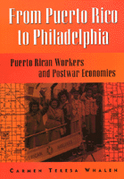

<body bgcolor="#FFFFFF" text="#000000" link="#0000FF" vlink="#CC0000" alink="#CC0000"><center><hr width="350" size="1" align="center" noshade>A history of Puerto Rican immigration to Philadelphia<hr width="350" size="1" align="center" noshade><p><a href="https://cdcshoppingcart.uchicago.edu/Cart/ChicagoBook.aspx?ISBN=9781566398350&&PRESS=temple" target="_top">Buy this book!</a> | <a href="https://cdcshoppingcart.uchicago.edu/Cart/Cart.aspx?PRESS=temple" target="_top">View Cart</a> | <a href="https://cdcshoppingcart.uchicago.edu/Cart/Cart.aspx?PRESS=temple" target="_top">Check Out</a></p><p></p></center><!--none//--><h1>From Puerto Rico to Philadelphia</h1>
<H2>Puerto Rican Workers and Postwar Economies</H2>
<h3>Carmen Teresa Whalen</h3>
<P>cloth 1-56639-835-5 $90.50, Feb 01, <FONT COLOR=#990033>Available</FONT>
<br>paper 1-56639-836-3 $44.95, Feb 01, <FONT COLOR=#990033>Available</FONT>
<BR> 328 pp
7x10
23&nbsp;tables 6&nbsp;map(s) 12&nbsp;figures 28&nbsp;halftones
</P><p>"We were poor but we had everything we needed," reminisces Doña Epifania. Nonetheless, when a man she knew told her about a job in Philadelphia, she grasped the opportunity to leave Coamas. "He went to Puerto Rico and told me there were beans to cook. I came here and cooked for fourteen workers." In San Lorenzo, Doña Carmen and her husband made the same decision: "We didn't want to, nobody wanted to leave. . . . There wasn't any alternative." Don Florencio recalls that in Salinas work had gotten scarce, "especially for the youth, the young men. . . . The farmworker that was used to cutting cane, already the sugar cane was disappearing," and government licensing regulations made fishing "more difficult for the poor."
<p>Puerto Rican migration to the mainland following World War II took place for a range of reasons&#151globalization of the economy, the colonial relationship between the United States and Puerto Rico, state policies, changes in regional and local economies, social networks, and, not least, the decisions made by individual immigrants. In this wide-ranging book, Carmen Whalen weaves them all into a tapestry of Puerto Rican immigration to Philadelphia.
<p>Like African Americans and Mexicans, Puerto Ricans were recruited for low-wage jobs, only to confront racial discrimination as well as economic restructuring. As Whalen shows, they were part of that wave of newcomers who come from areas in the Caribbean, Latin America, and Asia characterized by a heavy U.S. military and economic presence, especially export processing zones, looking for a new life in depressed urban environments already populated by earlier labor migrants. But Puerto Rican immigration was also unique, especially in its regional and gender dimensions. Many migrants came as part of contract labor programs shaped by competing agendas.
<p>By the 1990s, economic conditions, government policies, and racial ideologies had transformed Puerto Rican labor migrants into what has been called "the other underclass." Professor Whalen analyzes this continuation of "culture of poverty" interpretations and contrasts it with the efforts of Philadelphia Puerto Ricans to recreate their communities and deal with the impact of economic restructuring and residential segregation in the City of Brotherly Love.
<BR>&nbsp;<h2>Excerpt</h2><P>Excerpt available at <a href="http://www.temple.edu/tempress">www.temple.edu/tempress</a></p>
<BR>&nbsp;<h2>Reviews</h2>
<p><i>"[R]epresents the best of several writings...in English on the social and cultural history of Puerto Ricans in the United States. Whalen's magnificent prose tells the story of several generations of Puerto Rican families from the municipalities of Salinas and San Lorenzo who have chosen the path of migration to Philadelphia. Her detailed descriptions and rich analyses are the result of research in firsthand archival records and documents on Puerto Rico's planned migration and show how that policy formed one of the many pillars of the country's economic development strategy early in the 1940s."</i>
<br>&#151<b><i>The Journal of American History</i></b>
<p><i>"Whalen pushes us to consider whether this is the direction that women's history needs to go if it wants to treat racism and migration seriously: telling community stories rather than focusing on women per se, and showing, rather than assuming, that gender is an important piece of how racism and colonialism are lived."</i>
<br>&#151<b><i>The Women's Review of Books</i></b>
<BR>&nbsp;<h2>Contents</h2><P>
<p>List of Maps, Figures, and Tables
<br>Acknowledgments
<br>1. Looking for Work in the Global Economy: An Introduction
<br>2. From the Country to the Cities: Internal Migration and Migration to the States
<br>3. Contract Labor: The State-Sponsored Migration
<br>4. Leaving Local Communities: San Lorenzo and Salinas
<br>5. A Plethora of Limited Opportunities: Philadelphia’s Economy
<br>6. Formulating the "Culture of Poverty": Philadelphia’s Response to Puerto Rican Migration
<br>7. From Labor Migrants to the "Underclass": Interpreting Puerto Rican Poverty
<br>Epilogue
<br>Appendix I: Additional Data
<br>Appendix II: A Word on Sources
<br>Notes
<br>Selected Bibliography
<br>Index
</P><BR>&nbsp;<H2>About the Author(s)</H2>
<P><B>Carmen Teresa Whalen</B> is Assistant Professor of Puerto Rican and Hispanic Caribbean Studies at Rutgers University.</P>
<BR><H2>Subject Categories</H2>
<p><A HREF="/tempress/latino.html" TARGET="_top">Latino/a Studies</a>
<BR><A HREF="/tempress/philly.html" TARGET="_top">Philadelphia Region</a>
</p>
<p align="center"><a href="https://cdcshoppingcart.uchicago.edu/Cart/ChicagoBook.aspx?ISBN=9781566398350&&PRESS=temple" target="_top">Buy this book!</a> | <a href="https://cdcshoppingcart.uchicago.edu/Cart/Cart.aspx?PRESS=temple" target="_top">View Cart</a> | <a href="https://cdcshoppingcart.uchicago.edu/Cart/Cart.aspx?PRESS=temple" target="_top">Check Out</a></p><p><font face="Arial" size="1"><a href="copyright.html" onMouseOver="window.status='Web Copyright Policy';return true;" onMouseOut="window.status=''" title="Web Copyright Policy">&copy;</a> 2015 <a href="http://www.temple.edu" target="new" onMouseOver="window.status='Link to Temple University home page';return true;" onMouseOut="window.status=''" title="Link to Temple University home page">Temple University</a>. All Rights Reserved. http://www.temple.edu/tempress/titles/1524_reg.html</font></p>